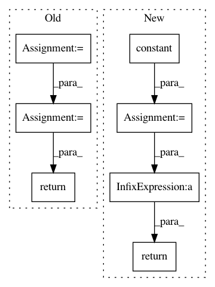

ee950b503eeed5aca3747a4bcf2a40f624b743a0,tensorforce/core/optimizers/synchronization.py,Synchronization,tf_step,#Synchronization#Any#Any#Any#,58
Before Change
deltas.append(delta)
return deltas
sync_frequency = self.sync_frequency.value()
skip_sync = (time - self.last_sync < sync_frequency)
return self.cond(pred=skip_sync, true_fn=no_sync, false_fn=apply_sync)
After Change
def no_sync():
deltas = list()
for variable in variables:
delta = tf.zeros(shape=util.shape(variable))
deltas.append(delta)
return deltas
sync_frequency = self.sync_frequency.value()
skip_sync = (timestep - self.last_sync < sync_frequency)
return self.cond(pred=skip_sync, true_fn=no_sync, false_fn=apply_sync)
In pattern: SUPERPATTERN
Frequency: 3
Non-data size: 7
Instances
Project Name: reinforceio/tensorforce
Commit Name: ee950b503eeed5aca3747a4bcf2a40f624b743a0
Time: 2019-01-21
Author: alexkuhnle@t-online.de
File Name: tensorforce/core/optimizers/synchronization.py
Class Name: Synchronization
Method Name: tf_step
Project Name: reinforceio/tensorforce
Commit Name: a3fe8bdf1c484e390dfe3947cc395372c0187589
Time: 2019-02-06
Author: alexkuhnle@t-online.de
File Name: tensorforce/core/distributions/beta.py
Class Name: Beta
Method Name: tf_sample
Project Name: tensorflow/models
Commit Name: 5e854f25098ca40a4ac80197607bf883feaeb375
Time: 2018-02-13
Author: lzc@google.com
File Name: research/object_detection/utils/learning_schedules.py
Class Name:
Method Name: manual_stepping